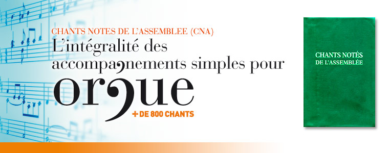

_
_
Le chant :
expression d’une assemblée qui toute célèbre
A la suite du concile de Vatican II, de très nombreux auteurs et compositeurs ont mis leurs talents au service de la création en faveur de la vie liturgique de l’Église. Il est vrai qu’un accent nouveau était engagé dans les célébrations : « L’Église désire beaucoup que tous les fidèles soient amenés à cette participation pleine, consciente et active aux célébrations liturgiques » (Constitution Sacrosanctum Concilium, 14). C’est par le « nous » des chrétiens, où chacun est uni aux autres tout en restant lui-même, que l’Église vit et se manifeste comme sacrement du salut (Mgr Raymond Bouchex, Le ministère des prêtres dans l’Église tout entière « ministérielle », Assemblée plénière de l’Épiscopat français, Lourdes 1973).
Le chant revêt alors une dimension nouvelle : il fédère, il unit, il permet à des femmes et des hommes de devenir l’expression d’une assemblée qui toute célèbre. Ce chant qui permet aux chrétiens de se reconnaître dans l’unique louange que l’Église offre à son Seigneur. Un répertoire nouveau doit être donné : des efforts considérables sont déployés par des auteurs et des compositeurs. Selon les communautés, en fonction de leur histoire et de leurs traditions, des répertoires « personnalisés » sont créés : merveilleuse expression de l’Église dans la pluralité de ses visages.
Les évêques des pays francophones ont souhaité alors proposer un recueil de chants pour les assemblées liturgiques, c’est le CNA : Chants Notés de l’Assemblée (Bayard Éditions, 2001). L’enjeu d’un tel ouvrage est double : il est d’abord de donner aux communautés un livre de chant commun tout en honorant la pluralité des répertoires, ensuite nos évêques, gardiens de la foi de leur peuple, ont voulu donner par le manuel Chants Notés de l’Assemblée, des mots et des musiques susceptibles de proclamer la foi de l’Église. Lex orandi, lex credendi : nous prions comme nous croyons.
Dans la liturgie, le chant opère donc à la manière d’un pédagogue qui nous conduit au cœur du mystère célébré. Ce que nous chantons, c’est bien le Cantique Nouveau : le cantique de l’homme nouveau qui, à travers une existence menée par l’Esprit, accueille et met en pratique la Parole. Nous ne chantons pas seulement avec la voix mais avec notre vie. C’est ainsi que celui qui chante devient louange qui plaît à Dieu. (Mgr Claude Feidt, Préface de Chants Notés de l’Assemblée).
Ce CD-Rom :
un outil indispensable pour l’organiste liturgique
L’organiste est serviteur de la liturgie. Il donne vie à l’action liturgique dont il perçoit ou prévoit le déroulement. Parmi ses missions, il en est une qui est première : il est l’accompagnateur du chant de l’assemblée dont il doit être l’animateur efficace. Il sait utiliser les plans sonores de l’instrument pour accompagner comme il convient solistes, chœur et assemblée. Il aide à distinguer les différents rites ou moments de la célébration. […] Il soutient le chant, fait respecter les rythmes en utilisant une registration appropriée (Charte des organistes, Célébrer, n° 303, mars-avril 2001, Cerf-CNPL).
Pour tous les chants qui figurent dans Chants Notés de l’Assemblée, l’organiste liturgique trouvera dans ce CD-Rom des accompagnements simples, d’ordinaire à trois voix et qui reprennent les harmonisations des polyphonies des chants lorsqu’elles existent : ils peuvent donc accompagner aussi bien une assemblée qui chante à l’unisson qu’une chorale chantant à trois ou quatre voix mixtes.
Recherche d'une partition,
principes de fonctionnement
La recherche d’une partition peut être effectuée selon quatre critères différents :
Par numéro du chant dans le recueil Chants Notés de l’Assemblée
Par titre du chant
Par incipit littéraire (début du texte du chant)
Par cote
en cliquant à gauche dans la fenêtre de navigation dans le critère de recherche souhaité. Dans la fenêtre principale, la colonne concernée est colorée.
Pour gagner du temps, on peut cliquer à tout moment dans la fenêtre de navigation sur le numéro ou la lettre la plus proche du titre recherché. La liste se déplace à l’endroit voulu.
Imprimer une partition
Pour voir une partition, après l’avoir recherchée (voir ci-dessus), il suffit de cliquer sur le numéro en rouge dans la fenêtre principale. La partition est alors ouverte au format « pdf » sous Adobe Reader (ou Acrobat Reader).
Utiliser la commande d’impression située dans la fenêtre de Adobe Reader.
Certains titres sont édités sur plusieurs pages. Chaque page est numérotée (ex. : 1/3, 2/3).
Le programme Adobe Reader (ou Acrobat Reader) doit être installé sur votre ordinateur. Si vous ne possédez pas ce programme, vous pouvez l’installer à partir de ce CD (en faisant « explorer le CD »).
Gravure des partitions : Dominique MONTEL - 4 place des Lavoirs - 30350 LÉDIGNAN
Ce CD-Rom est le fruit d’une collaboration entre les Éditions Bayard Presse et l’Association Épiscopale Liturgique pour les pays Francophones (A.E.L.F.).
Les œuvres reproduites dans ce CD-Rom ont fait l’objet d’une demande d’autorisation de reproduction auprès du Secrétariat des Éditeurs de Chant pour la Liturgie (SECLI). Autorisation n° 07/017.
Les œuvres n’appartenant pas au fonds du SECLI sont ici reproduites grâce à l’aimable autorisation des éditeurs, auteurs et compositeurs ou leurs ayants-droit. Qu’ils en soient ici remerciés une nouvelle fois.
Toute reproduction de ces œuvres, chant original ou accompagnement pour orgue, autre que celle strictement offerte par l’utilisation de ce CD-Rom (impression de partition dans un usage raisonnable et hors d’un contexte commercial) doit faire l’objet d’une demande auprès des ayants-droit ou, le cas échéant, du Secrétariat des Éditeurs de Chant pour la Liturgie (SECLI - Abbaye Sainte-Scholastique - 81110 DOURGNE - secli@secli.cef.fr).
Les références ici reprises sont celles figurant à l’index de l’édition du Manuel des Chants Notés de l’Assemblée (© 2001, Bayard Éditions - A.E.L.F.).
Pour les œuvres 215-27, 386, 448, 623, 763, 764, 790, 791, 792 et AT 41 :
Musique : J. Berthier - © Ateliers et Presses de Taizé, 71250 Taizé, France
Pour les œuvres 167, 250, 332, 345, 783 et 806 :
Compositeur André Gouzes - © Les Éditions de Sylvanès BP 13 - 12360 CAMARÈS - www.sylvanet.com
Pour toutes les autres : voir en bas de chaque partition.
A.E.L.F.
58, avenue de Breteuil
75007 PARIS
Éditions Bayard Presse
3, rue Bayard
75008 PARIS